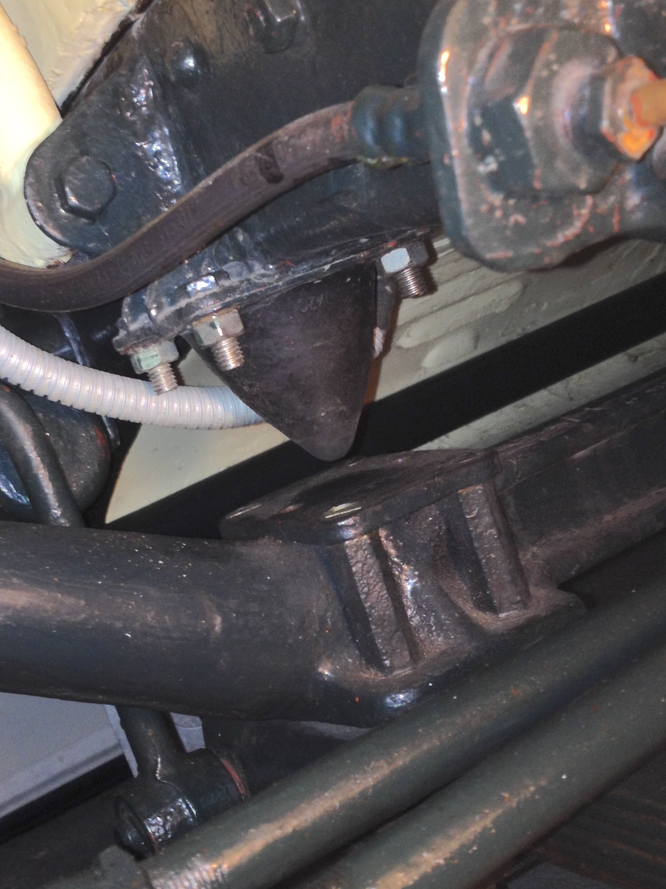
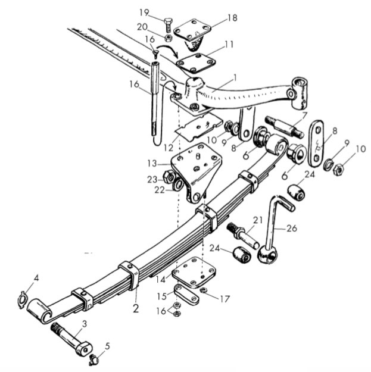
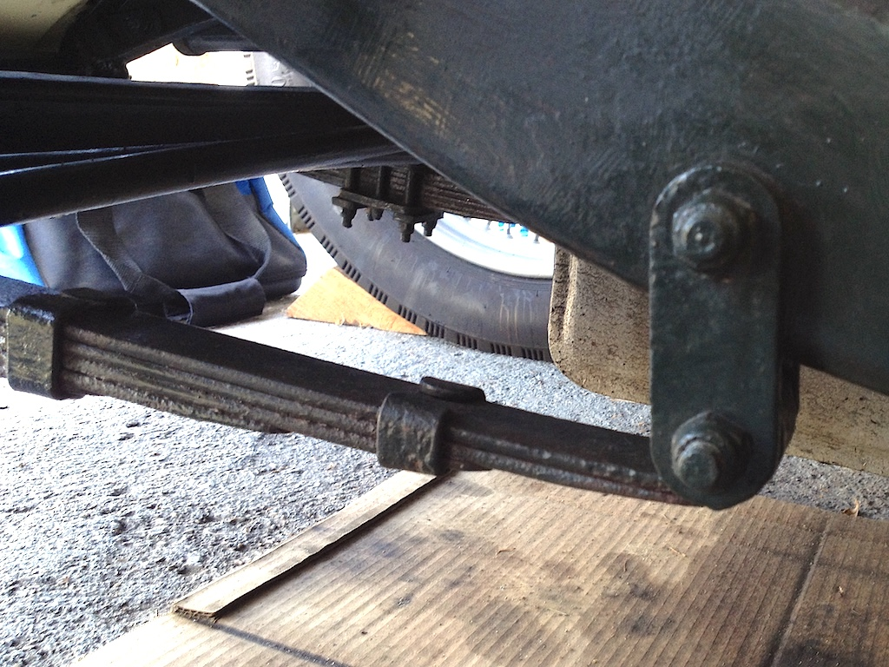
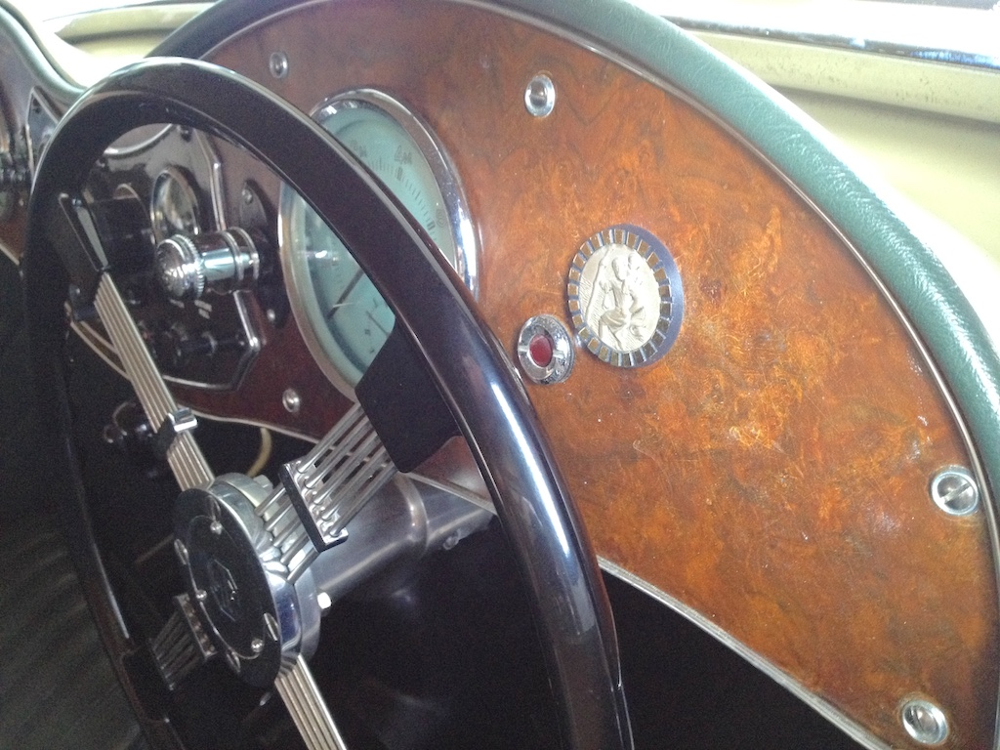
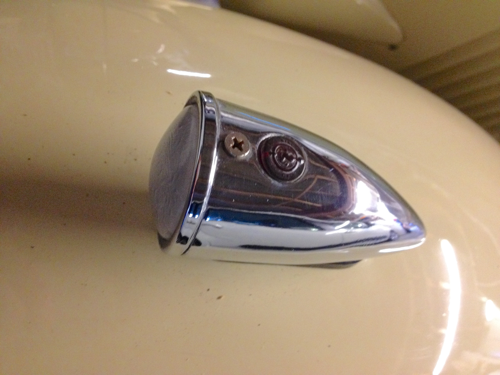

Jobs During Lockdown
It's the end of March, the sky is a vibrant blue and there is hardly a breath of wind. Even though the outside thermometer (in the shade) is only showing 13 degrees, I should be out in the TC with the hood down. I did start the engine and ran the car little more than a car's length up and down the drive this morning. It did give me a chance to sweep up the leaves that had blown into the garage and collected under the car, but it wasn't very satisfying. Each week I've been rolling the TC a few inches so as to help prevent flat spots on the tyres and then every couple of weeks I run the engine for a while. At least it keeps me in practice in how to manoeuvre myself into and out of the driver's seat when the hood is up. My body isn't really supple enough, so I have developed a technique that doesn't look too foolish.
Looking back at the articles that have appeared in Main Gear over the past year we seem to have a number about outings (when we were allowed), reminiscences (what we were doing this time last year), MG memorabilia (adverts and articles from the heyday), other hobbies and pastimes that may be related to MGs or cars, if only tenuously, and a few jobs that we have done on our cars. I suspect that more work has been done on our various MGs than has appeared in Main Gear, but I've been quite lazy.
I started pretty well, overhauling the brake cylinders and replacing the fluid. It was about the right time to do the latter and I thought that while at it I should replace the rubber parts in the slave cylinders. I then had fun in the summer, working on the bench, refurbishing the horn and making it work in the process. And it still works. I give a little toot each time I get in the car, just to check it. Then in the autumn I stripped down the carburettors, replacing all the gaskets and seals. Although I reset the fuel level in the jets, I still need to tune the carburettors (which needs some road tests). However, certain bolts still work loose after the engine has been run for a while and petrol leaks out. Otherwise I 'tinkered' with minor items, like painting the rear number plate backplate after finding it was rusty.
Of course there are jobs that are more important and more demanding than others, probably on a wide spectrum of both measures. I've had one job on my list since I bought TC4985 in 2015. Before agreeing to buy it I noticed that the gap between the front axle and the bump-stop was much less than I expected. As you can see from the photo it is only half an inch, whereas maintenance documents say that it should be two inches when the car is not loaded.
For those unfamiliar with the front suspension on a 1948 TC I include an exploded diagram taken from a parts catalogue. The part numbered 1 is the beam axle. The bump stop (18) and the two ends of the leaf spring (2) are attached to the chassis and the axle is bolted to the centre of the spring. The item marked 26 attaches to the hydraulic piston-type damper.
Too small a gap under the bump stop implies springs that have sagged with age (sounds familiar) and so need to be revived. I've replaced the rubber bushes at the ends of the springs with polyurethane equivalents, so I know that I can tackle those. However, the attachment of the spring to the axle involves four long bolts (16) and two shorter bolts that, for some reason, are not shown on the diagram. This has to be done while supporting the axle and ensuring the correct alignment when the spring is replaced.
Another consideration is that there are two options available to remedy a sagging leaf spring; fit a new one or get the old one re-tempered. The simplest option is to fit a new spring. However, if you look at the photo (and ignore the cardboard that is catching oil drips) you will notice that the thickness of each leaf is tapered towards the end. But each leaf of a new spring is of constant thickness, being 'chopped off' square at each end. A minor difference, you might say, but why use something different just because it is cheaper to manufacture? Of course, to re-temper the old springs I need to find a company that can do it (I have the original specification), get the springs to them and then get them back, all in lockdown. So I've put off the job yet again.
On the subject of 'originality' I'm not really a stickler for keeping a classic car looking as it did when it left the factory. My main interest is in keeping the car in a safe drivable state. For example, the chassis and running gear of TC4985 is painted dark green, whereas originally it was black. The previous owner repainted it and I think it suits the car. Also, the car is fitted with a stainless steel exhaust, rather than the mild steel original.
 However, there are some things that do 'annoy' me. These are mainly where some item is currently used whereas it was not available at the time that the car was built. For example, the walnut veneered dashboard was screwed in place with chrome-dome covered screws, as you can see in the photo.
However, there are some things that do 'annoy' me. These are mainly where some item is currently used whereas it was not available at the time that the car was built. For example, the walnut veneered dashboard was screwed in place with chrome-dome covered screws, as you can see in the photo.
The second photo shows how the dash was originally secured, with slotted screws in cup washers, and so now looks as it should. The remaining thing that annoys me every time I look at it is the use of phillips head set screws on the top of the side lights, and countersunk versions at that.
Although Henry F. Phillips patented the design in 1936 (having bought it from someone else), I don't think that the design crossed the Atlantic until after the TC's production run. Certainly the car was not produced with phillips screws. So I now just need to find chromed, slotted, domed, 1/2" 4BA set screws.
Having only driven TC4985 60 miles over the past year I've skipped doing a full service and have only adjusted points and plugs and checked fluids in preparation for the day when non-essential journeys are permitted. I'm just keeping my fingers crossed for some weather that is similar to today's.
© David James 2021 Last updated: 31st March 2021